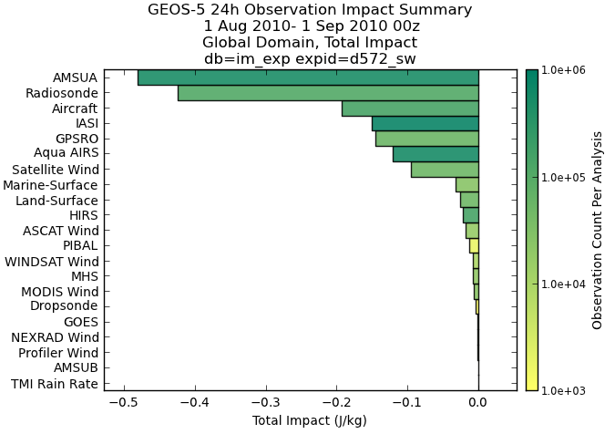
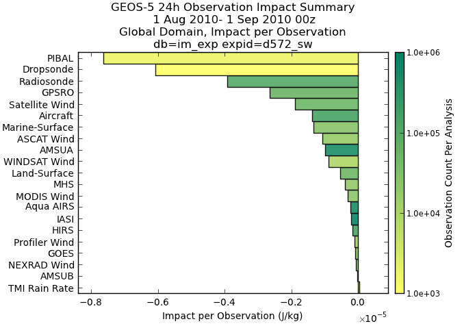
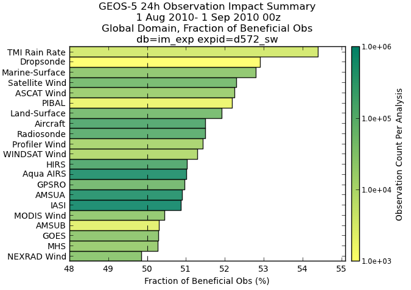
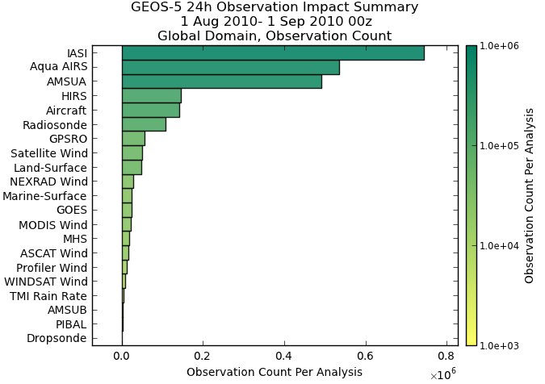
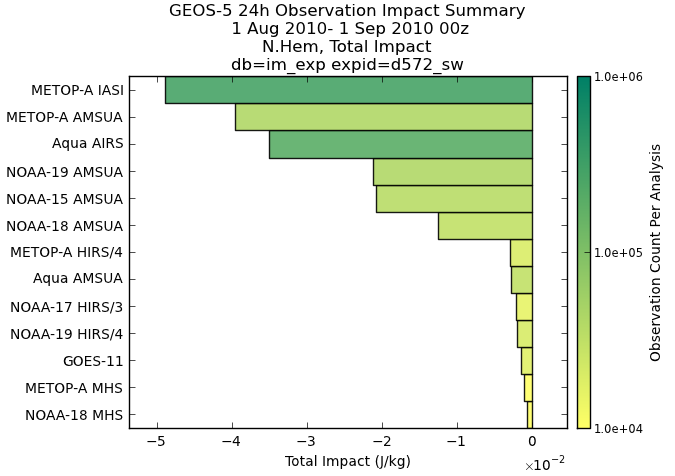
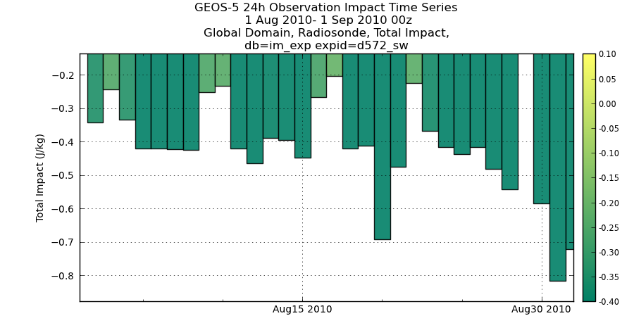
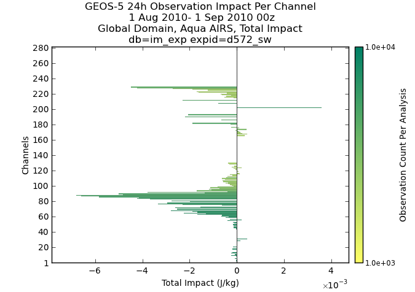

Computing statistics for observation impacts uses the same tools as for computing statistics for observations. We invite you to refer to Standard observation statistics for more details on the explanation of different scripts, we will here document what is different.
You can compute statistics for observation impacts using imp3_txe.ods files created by your experiment and plot the results in a ways which is similar to the way this is done in operations.
You can find examples here:
http://gmao.gsfc.nasa.gov/products/forecasts/systems/fp/obs_impact/
In summary you can download the following scripts and configuration files:
and read the rest of the documentation if required.
The sample script for computing observation statistics is the following one (compute_impact_stats.py):
The keywords which vary the most between experiments are defined at the top of the script for convenience.
warning: please make sure that there is no comma (,) at the end of the lines 3 to 7 (after the constants) as this would cause an error with a message which is not very clear.
Summary plots show the performance of observing systems in an single plot, enabling their comparison (summary_all.py):
This script generates 16 plots, one for each different statistic / domain_name combination:
- total impact,
- impact per observation,
- fraction of beneficial observations,
- observation count per analysis
note: please notice that the keyword filename (lines 19, 33, 48, 70) defining the observing systems we want to plot is define at the level of the plot summary_plot, because all these systems will be displayed on the same plot. This script produces (for the global domain):




note: the keyword level is not specified, this means that all levels are used. Each bar in the plot is the aggregation of all daily statistics for all levels and all days specified in the script for one particular observing system and one particular geographical domain. The script called (summary_radiances.py) produces a similar plot using a different definition file to compare radiances only:

The script timeseries_all.py produces timeseries of impacts over any duration of time (timeseries_all.py):
This script generates 4 plots per statistic (4), per geographical domain (4) and per observing system (20 in the file (timeseries_all.def), say 320 plots. Here is a sample:

The script (timeseries_radiances.def) generated an identical result involving satellite radiances.
The script (channels.def) show observation impacts for individual channels:

note: the scripts presented above produce file names which are compatible with the web page: http://gmao.gsfc.nasa.gov/products/forecasts/systems/fp/obs_impact/
so you can then easily access all your plots through a similar interface. Austin Conaty is the person to contact for more information regarding this.
{kind=link}
{kind=link}
{kind=link}
{kind=link}
{kind=link}
{kind=link}
{kind=link}